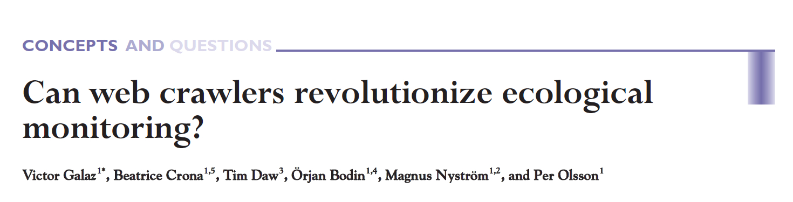
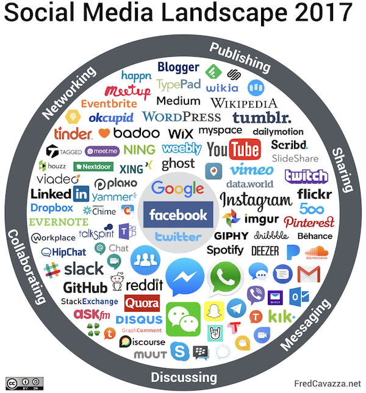
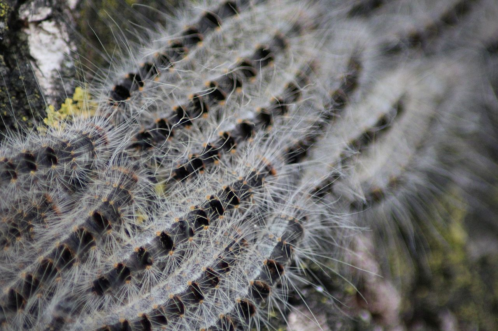
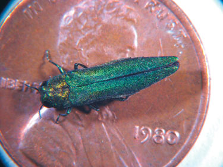

From observation to computation?
Employing social media mining and artificial intelligence to mobilize new citizen science movements.
Stefan Daume @ Scitingly
04. June 2018
From observation to computation?
Employing social media mining and artificial intelligence to mobilize new citizen science movements.

Stefan Daume
Scitingly
ECSA Conference 2018
Geneva
04. June 2018
Motivation
Galaz et al paper

Frontiers in Ecology and the Environment 2009; 7, doi:10.1890/070204
Catastrophic ecosystem changes
Catastrophic ecosystem changes
EARLIER WARNINGS THROUGH
OPPORTUNISTIC, INFORMAL
SOURCES?
Informal sources are already used in similar domains
Epidemic disease monitoring
Framing the research
Problem framing
Which social media?
Which ecological problems?
Choice: Twitter

Choice: Invasive Alien Species
Data collection
Ecoveillance platform

So, what were the results?
Sample Tweets
Please keep children and animals away from hairy caterpillars and their nests in oak trees. This will help avoid avoid itching skin rashes and other health problems caused by oak processionary moth caterpillars. https://t.co/DFFY34h51D pic.twitter.com/KiPpP3bSLr
— EalingCouncil (@EalingCouncil) May 19, 2018
Sample Tweets
First time I saw the oak processionary in action today. Quite impressive phenomenon! pic.twitter.com/Lmo9s6LNqp
— Home Turf Project (@HomeTurfProject) May 17, 2018
Sample Tweets
How cute is this baby grey #squirrel in @ErddigNT country park today also saw my first comma #butterfly of the year and another speckled wood @savebutterflies @Natures_Voice @North_Wales_WT @LifeinNW @AMAZlNGNATURE pic.twitter.com/r8p479WvDM
— Melissa Roberts (@smilingassasin) May 18, 2018
Summary of results
- Tweets are a rich source of primary biodiversity observations in general (Daume, 2016).
- Singular observations of invasive species prove valuable.
- Distinctive public perceptions can be extracted.
Mobilise communities not data!
ECS example (step 1)
Saw this beautiful iridescent green bug today. Anyone know what it is? https://t.co/kTWt8rG594
— Lindsey Kuper (@lindsey) 1 July 2014
ECS example (step 2)
Saw this beautiful iridescent green bug today. Anyone know what it is? https://t.co/kTWt8rG594
— Lindsey Kuper (@lindsey) 1 July 2014
@lindsey no, but a google search-by-image might? Also, neat bug!
— Allison Kaptur (@akaptur) 1 July 2014
ECS example (step 3)
Saw this beautiful iridescent green bug today. Anyone know what it is? https://t.co/kTWt8rG594
— Lindsey Kuper (@lindsey) 1 July 2014
@akaptur @lindsey That's a Tiger Beetle!
— Ben Britttain (@Brittain_Ben) 1 July 2014
ECS example (step 4)
Saw this beautiful iridescent green bug today. Anyone know what it is? https://t.co/kTWt8rG594
— Lindsey Kuper (@lindsey) 1 July 2014
@akaptur @lindsey That's a Tiger Beetle!
— Ben Britttain (@Brittain_Ben) 1 July 2014
@Brittain_Ben @akaptur Thanks! @ndr_qef pointed me to http://t.co/Y4oOvAfzfQ, but I think my picture is prettier…
— Lindsey Kuper (@lindsey) 1 July 2014
ECS example (step 5)
Saw this beautiful iridescent green bug today. Anyone know what it is? https://t.co/kTWt8rG594
— Lindsey Kuper (@lindsey) 1 July 2014
@akaptur @lindsey That's a Tiger Beetle!
— Ben Britttain (@Brittain_Ben) 1 July 2014
@Brittain_Ben @akaptur Thanks! @ndr_qef pointed me to http://t.co/Y4oOvAfzfQ, but I think my picture is prettier…
— Lindsey Kuper (@lindsey) 1 July 2014
@lindsey @akaptur @ndr_qef I'm gonna argue it is a Cicindela sexguttata. http://t.co/otbd4cKjJW :D
— Ben Britttain (@Brittain_Ben) 1 July 2014
ECS example (step 6)
Saw this beautiful iridescent green bug today. Anyone know what it is? https://t.co/kTWt8rG594
— Lindsey Kuper (@lindsey) 1 July 2014
@Brittain_Ben @akaptur Thanks! @ndr_qef pointed me to http://t.co/Y4oOvAfzfQ, but I think my picture is prettier…
— Lindsey Kuper (@lindsey) 1 July 2014
@lindsey @akaptur @ndr_qef I'm gonna argue it is a Cicindela sexguttata. http://t.co/otbd4cKjJW :D
— Ben Britttain (@Brittain_Ben) 1 July 2014
@Brittain_Ben @akaptur @ndr_qef Ooh, I think that's it! Thanks!
— Lindsey Kuper (@lindsey) 1 July 2014
ECS example (step 7)
Saw this beautiful iridescent green bug today. Anyone know what it is? https://t.co/kTWt8rG594
— Lindsey Kuper (@lindsey) 1 July 2014
@lindsey @akaptur @ndr_qef I'm gonna argue it is a Cicindela sexguttata. http://t.co/otbd4cKjJW :D
— Ben Britttain (@Brittain_Ben) 1 July 2014
@Brittain_Ben @akaptur @ndr_qef Ooh, I think that's it! Thanks!
— Lindsey Kuper (@lindsey) 1 July 2014
@lindsey @Brittain_Ben @akaptur Indeed. (Number of spots not actually guaranteed; your critter happens to sport eight spots.)
— Andrew (@ndr_qef) 1 July 2014
ECS example (step 8)
Saw this beautiful iridescent green bug today. Anyone know what it is? https://t.co/kTWt8rG594
— Lindsey Kuper (@lindsey) 1 July 2014
@Brittain_Ben @akaptur @ndr_qef Ooh, I think that's it! Thanks!
— Lindsey Kuper (@lindsey) 1 July 2014
@lindsey @Brittain_Ben @akaptur Indeed. (Number of spots not actually guaranteed; your critter happens to sport eight spots.)
— Andrew (@ndr_qef) 1 July 2014
@ndr_qef @Brittain_Ben @akaptur Here's another with eight! http://t.co/hIWDoDdSh9 Article edited: https://t.co/hfgbV8EeiC /
— Lindsey Kuper (@lindsey) 1 July 2014
“Embryonic Citizen Science Communities”
- These Twitter conversations are embryonic citizen science communities (Daume & Galaz, 2016).
- Biodiversity data is collected, shared, reviewed, verified and annotated.
- And then forgotten.
Formalisation of interactions is required
Automatic formalisation of social computations
- Express these interactions with a social calculus (Robertson et al, 2014).
- Automate the discovery and formal representation of these conversations.
How can this be applied?
- To assess the reliability of environmental observations sourced from Twitter.
- To compare with and assess other environmental data sources.
- To provide seed data and communities for specific projects.
Ecoveillance Application Scenario
- Seed observation data with Twitter searches
- Find micro-communities
- Store observation data
- Alert original communities and
- … invite communities for digital curation of new data
- … invite communities for “analog” data collection
Thank you!
Colophon
“From observation to computation? - Employing social media mining and artificial intelligence to mobilize new citizen science movements.” by Stefan Daume
Presented at ECSA Conference 2018 on 04. June 2018.
This presentation can be cited using: doi:…
PRESENTATION DETAILS
Author/Affiliation: Stefan Daume, Scitingly
Presentation URL: https://sdaume.github.io/2018-ECSA-Social-Computation
Presentation Handouts: https://sdaume.github.io/2018-ECSA-Social-Computation/handouts
Presentation Source: [TBD]
Presentation PDF: [TBD]
CREDITS & LICENSES
This presentation is delivered with the help of several free and open source tools and libraries. It utilises the reveal.js presentation framework and has been created using RMarkdown, knitr, RStudio and Pandoc. highlight.js provides syntax highlighting for code sections. PDF and JPG copies of this presentation were generated with DeckTape. Please note the respective licenses of these tools and libraries.
If not noted and attributed otherwise, the contents (text, charts, images) of this presentation are Copyright © 2018 of the Author and provided under a CC BY 4.0 public domain license.
Appendix
Social Media Landscape

Properties: Twitter

- Public
- Non-reciprocal
- Information-push network
- Real-time
- Low contribution hurdle
- Open API
- Large volume
Properties: Invasive Alien Species
- Drivers and indicators of ecosystem change
- Ecological, economic and security significance
- Recognizable by non-experts
- Often notable and discrete events
- Subject of “traditional” ecological monitoring
Explored sample IAS species
Eastern grey squirrel
{kind=link}
Oak processionary 
{kind=link}
Emerald ash borer 
{kind=link}
Scitingly: Planned structure
scitingly.io
“Scitingly Labs”

Ecoveillance platform
Socially computed data of high quality!